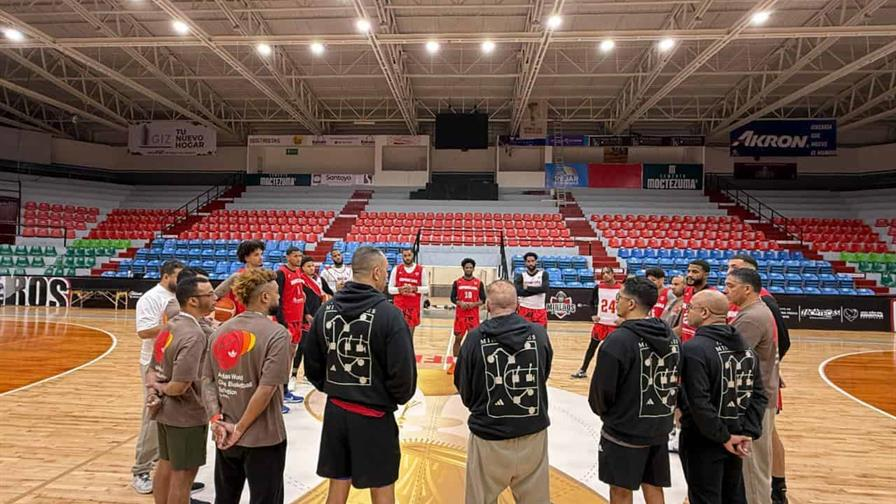
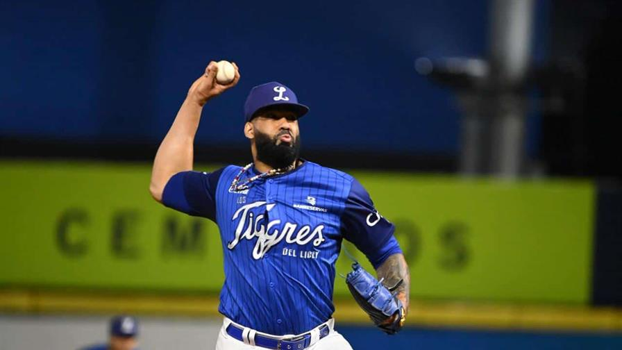

Los Toros vuelan en las bases en busca de carreras para ganar partidos. (FUENTE
EXTERNA.)
De acuerdo con el dirigente de los
Toros del Este, Víctor Estévez, desde el inicio de la temporada, se le cuestionaba si
el equipo iba a ser rápido.
Luego de haber jugado 28 partidos, los romanenses son los líderes de bases robadas con
48 y solo ocho puestos fuera.
Se debe a la preparación que hemos tenido, ya que al equipo se le ha suministrado una
data a que a los ugadores les ha permitido tomar las ventajas necesarias para alcanzar
almohadillas
adicionales luego de embasarse", dijo Estévez al conversar con Noti Express.
En las filas taurinas sobresale el jardinero central Gilberto Celestino,
que encabeza la liga en hurtos con 17 aciertos en igual número de intentos.
Estrategia de equipo
Celestino es el que más ha robado, pero la
estrategia del conjunto es uniforme para casi todos los jugadores.
En las 14 victorias de los taurinos (con excepción de una), catorce peloteros han
robado al menos una
El plan ha incluido en esos triunfos a Celestino (9 bases), Yairo Muñoz (2),
Rafael Lantigua (2), Jeison Guzmán, Iván Castillo, Bryan Torres, Gustavo Campero,
Ronaldo Hernández, Paolo Espino, Eloy Jiménez, Luis Valdez, Ismael Alcántara (estos dos como
corredores emergentes), Bryan de la Cruz y Jared Oliva, lo que evidencia la
integración y la preparación de todo el conjunto del este del país.
Con Chris Duarte de vuelta, RD inicia camino a Qatar 2027
Busca su cuarta clasificación en fila al Mundial de Básquet
La legión europea incluye a Jean Montero y Andrés Feliz
Santo Domingo - nov. 27, 2025 | 11:56 p. m.|lectura
La selección nacional de baloncesto debuta frente a México hoy en Zacatecas. (FUENTE EXTERNA)
Regresar a la Copa del Mundo de básquet le tomó 36 años a la selección dominicana
tras su debut en 1978. Esta noche, el quinteto nacional inicia el recorrido detrás de su cuarta
clasificación en fila y lo hace forrada de una parte de su generación de mayor presencia internacional.
México es el rival que marcará el puntapié inicial, en un proceso que se extenderá hasta
febrero de 2027. El partido, que se celebrará en Zacatecas, en el centro de la nación azteca,
arrancará a las 10:40 p.m., hora dominicana.
El técnico argentino Néstor "Ché" García y la Fedombal anunciaron ayer el grupo de 12
jugadores que conformará el equipo, liderado por Jean Montero, Andrés Feliz y Chris Duarte, quien
estará con el conjunto por primera vez desde su participación en el repechaje de los Juegos Olímpicos
París 2024, celebrado en Grecia.
Licey amplía su racha, sacan garras ante Águilas al vencerlas 10-5 con ofensiva de Rojas Jr.
Los Tigres ganan su cuarto partido corrido y vencen a las rapaces por segundo juego corrido
lecturaSanto Domingo - nov. 29, 2025 | 12:34 a. m.|
Jean Carlos Mejía, de los Tigres del Licey, lanza en el noveno episodio ante las Águilas Cibaeñas
en el partido que ganó su equipo 10-5, un juego que comenzó el viernes y terminó pasada la media
noche del 29 de noviembre de 2025 en el Estadio Quisqueya Juan Marichal.(CORTESÍA TIGRES DEL
LICEY)
Sin dudas, el mejor momento de los Tigres del Licey en la temporada: derrotan a las
Águilas Cibaeñas 10 carreras por cinco, las vencen por segundo duelo corrido en sus últimos dos
enfrentamientos y encadena su cuarta victoria al hilo. Mel Rojas Jr. encabezó una ofensiva azul y
Gustavo Núñez aseguró el partido con jonrón de dos carreras en el octavo con el que Licey
sacaba ventaja de cinco a su archirrival en un partido que debió ser detenido en la parte baja del
segundo debido a la lluvia. David Hensley también remolcó dos vueltas.
Con su victoria, los Tigres (13-16), todavía algo distante de estar en .500, se mantienen en el
cuarto lugar de la apretada tabla en la que solo las Águilas (22-6) son las únicas que
vuelan desahogadas con apenas su sexta derrota en 28 encuentros y el único equipo que juega bien por
encima de .500. Fue un triunfo dulce para los miles de espectadores que acudieron al Estadio
Quisqueya Juan Marichal y se fueron a sus hogares pasada la media noche, debido al retraso del
partido por la lluvia.
A Anderson Severino le bastaron solo dos tercios de entradas para llevarse su primera
victoria de la campaña. Con una ventaja de cinco vueltas, el Licey acudió a su cerrador
Jean Carlos Mejía quien cerró el partido con ponches sucesivos a José Rodríguez y al emergente
(por Webster Rivas) John García. El Licey tomó la ventaja en el primer episodio 4-1 y dejaron con
solo dos tercios de entradas lanzadas al panameño Abdiel Mendoza quien se fue del
montículo con esas carreras permitidas.
La serie particular sigue a favor aún de las Águilas 4-3 y la este sábado se verán las caras por segundo
día corrido, ahora en el Estadio Cibao. Tras la carrera temprana de las Águilas, el Licey respondió con
fuerza en el cierre del primer episodio. Cal Stevenson abrió con sencillo al central y avanzó hasta
tercera por robo y error en tiro del receptor Webster Rivas. Luego, Cristhian Adames y Luis Campusano
recibieron boletos consecutivos para llenar las bases.
Tatis Sr. y las Estrellas, un matrimonio convulso, con muy buenos resultados
El estratega ha llevado a los verdes a cuatro finales en seis temporadas
Fernando Tatis padre dirigía a los orientales desde la temporada 2021-2022.. (FUENTE
EXTERNA)
Lo de Fernando Tatis padre o Tatis II y las Estrellas Orientales es un matrimonio
normal que no se recomienda decir que su más reciente ruptura certifica el divorcio. Es como
las Águilas Cibaeñas y Félix Fermín. El equipo verde comunicó el sábado que Tatis II
no seguirá al frente del equipo tras las declaraciones que este hizo al programa Mañana
Deportiva, el viernes, en las que se quejaba de las dificultades que tenía hasta para confeccionar
la alineación. Puede haber sido la gota que rebosó la copa de un proyecto que no ha arrancado, a
pesar de la gran inyección de recursos económicos que hizo la directiva con una agresiva apuesta en
la agencia libre, pero que la fecha tiene a la novena en el sótano de las clasificaciones.
Tatis era el dirigente más longevo en la Lidom. Estaba al frente de los paquidermos desde la
temporada 2021-2022, su segunda estadía. Antes estuvo entre las zafras 2018-2019 cuando
comandó a la escuadra de su natal San Pedro de Macorís a su primera corona en medio siglo. Sin
embargo, un arranque de 5-19 en la campaña 2019-2020 provocó su despido en noviembre,
lo que molestó a su hijo mayor, quien entonces prometió que no volvería a jugar con el conjunto
oriental.
Con Tatis al mando, los paquidermos asistieron a las finales de 2022, 2023 y 2024, donde cayeron
ante Gigantes y las últimas dos frente al Licey.
El detonante
El petromacorisano lanzó ayer viernes fuertes críticas al comportamiento y compromiso de
muchos jugadores en la pelota invernal dominicana, asegurando que la liga atraviesa una etapa
marcada por la falta de competitividad y la excesiva delicadeza de algunos peloteros.
La destitución de Tatis llega en un momento complicado para las Estrellas, que actualmente ocupan el
último lugar con 13 victorias y 18 derrotas, aunque todavía se mantienen a solo dos partidos
del segundo puesto y a uno de la cuarta posición clasificatoria.
En lugar de Tatis, el coach de banca Carlos Paulino asumirá las funciones de mánager
interino. "Agradecemos a Fernando Tatis por su trabajo y dedicación"concluyó el comunicado
del equipo.
De que te entran peloteros, que te salen peloteros, que este se enfermó, que fulano no quiere jugar,
que le duele la cabeza, que tiene un malestar estomacal... En un mismo día tú haces dos o tres
lineups antes del juego. El fanático no entiende eso", expresó el dirigente a Mañana
Deportiva..
El dirigente aseguró que el trabajo dentro del banquillo se ha vuelto desgastante, explicando que los mánagers y coaches de pitcheo pasan más tiempo lidiando con excusas y situaciones menores que con el juego en sí. Según Tatis Sr., muchos jugadores muestran una actitud que obliga al cuerpo técnico a comportarse como "niñeros", algo que —dice— ya lo tiene agotado.
El conjunto verde informó en sus redes sociales que la desvinculación se llevó a cabo debido al malestar de varios jugadores tras las recientes declaraciones del capataz.
La decisión fue tomada por la directiva tras la manifiesta inconformidad de un significativo número de jugadores respecto a sus recientes declaraciones públicas. La organización lamenta esta separación, pero prioriza la cohesión del equipo para lograr el éxito deportivo. Agradecemos a Fernando Tatis por su trabajo y dedicación", explicó el equipo en un comunicado.
El Barça remonta ante el Alavés y vuelve a ser líder provisional en LaLiga
La magia del Camp Nou volvió a funcionar para el equipo azulgrana tras el tropiezo en Champions
Raphinha se apresta a lanzar ante la defensa del portero del Alavés. (AFP)
Todavía dolorido por el revés del martes en Londres ante el Chelsea, el FC Barcelona curó sus heridas con una victoria trabajada ante el Alavés (3-1), este sábado en la 14ª jornada de LaLiga española. Fue además con remontada incluida, ya que Pablo Ibáñez adelantó al Alavés en el primer minuto y luego llegaron el empate de Lamine Yamal (8') y dos tantos de Dani Olmo (26', 90+3').
Nos sorprendió ese gol del Alavés, pero hemos resuelto muy bien la situación. Jugamos con nuestras ideas, hemos dominado y nos hemos llevado la victoria, resumió Olmo en sus declaraciones a DAZN después del partido.
Con 34 puntos, el Barça recupera el liderato provisional de LaLiga, a la espera de la visita del domingo del Real Madrid (32 puntos), ahora segundo, al Girona (18º).
La magia del Camp Nou volvió a funcionar para el equipo azulgrana, que una semana después de volver a su estadio con una goleada al Athletic volvió a llevarse los tres puntos ante un equipo vasco, en un estadio que sigue en obras y que puede acoger por ahora a poco más de 45.000 espectadores de los 105.000 que se esperan cuando esté terminado a mediados de 2027.
Framber Valdez emerge como una seria opción para los Orioles
El zurdo dominicano llegó a su primera agencia libre con 32 años
Santo Domingo - nov. 27, 2025 | 06:57 p. m.|lectura Framber Valdez fue líder en partidos completos en la Liga Nacional con dos.(FUENTE EXTERNA)
Los Orioles de Baltimore, en su búsqueda por estabilizar una rotación de pitcheo
que perdió opciones clave, han puesto su mirada en la élite de los agentes libres, mostrando
particular
interés en el zurdo dominicano Framber Valdez, quien recientemente rechazó la oferta
calificada
de los Astros de Houston.
Este movimiento, reportado por Jon Heyman del New York Post, se alinea con la disposición del
presidente
de operaciones de béisbol de los Orioles,
Mike Elias, de fichar jugadores que impliquen la pérdida de una selección del Draft de
2026.
El interés de Baltimore por Valdez no es casual. Valdez es una figura probada
en
el montículo de la
MLBy un conocido de Elias, quien fue parte de la oficina principal de los Astros cuando el
dominicano se unió a la organización y debutó. Este
historial compartido podría ser un factor decisivo en las negociaciones.
La urgencia por un abridor de primera línea ha escalado, especialmente tras la reciente
adquisición del
bateador Taylor Ward desde los Angelinos a cambio del lanzador Grayson Rodriguez.